마지막 롱테이크
The Last Long Take
LOGLINE
세상 모두를 프레임에 담았지만 정작 자기 삶에는 한 번도 출연하지 않은 촬영감독 — 죽어가며 인생을 돌아보던 그는, 그렇게 지켜보기만 했던 시간마저 사랑이었음을 깨닫는다.
THEME
"그는 평생 삶을 지켜봤다. 산 것이 아니라."
렌즈는 그와 삶 사이의 유리벽이다. 그는 세상 모든 것을 바라봤지만 자기 삶에는 한 번도 출연한 적이 없다. 그리고 죽는 순간, 손녀가 카메라를 그에게 돌린다 — 그는 생애 처음으로 렌즈 앞에, 삶 안에 선다. 관객을 향한 질문은 하나다. "당신은 지금 삶을 살고 있는가, 삶을 찍고 있는가?"
WHY ONE TAKE — 형식이 곧 주제다
이 영화에 컷이 없는 것은 기술 자랑이 아니라 고백이다. 인생은 편집실이 없다. NG를 외칠 수 없고, 아까 그 장면으로 돌아갈 수 없고, 실수를 잘라낼 수 없다. 그의 일생을 담는 영화도 편집되어서는 안 된다 — 원테이크는 이 영화의 스타일이 아니라 주장이다.
동시에 이것은 위로의 문장이기도 하다. 편집할 수 없는 영화에서는 모든 순간이 본편이고, 버리는 컷이 없다. 낭비했다고 생각하는 시간, 실패했다고 여기는 장면들까지 전부 이미 상영 중인 영화의 일부다.
SCENES — 눈으로 들어가, 인생을 통과해, 눈으로 나온다
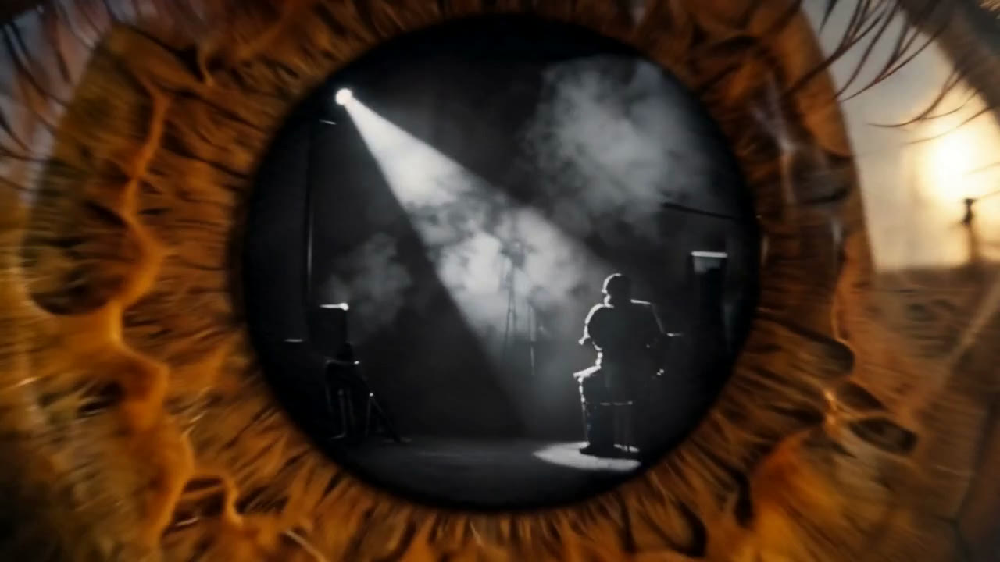
임종, 눈 속으로
노을이 타는 임종의 방. 카메라가 침대를 돌아 노인의 눈동자 속으로 다이빙한다. 죽음의 순간, 인생 전체가 "상영"되기 시작한다 — 이 남자에게 눈과 렌즈는 평생 같은 기관이었다.
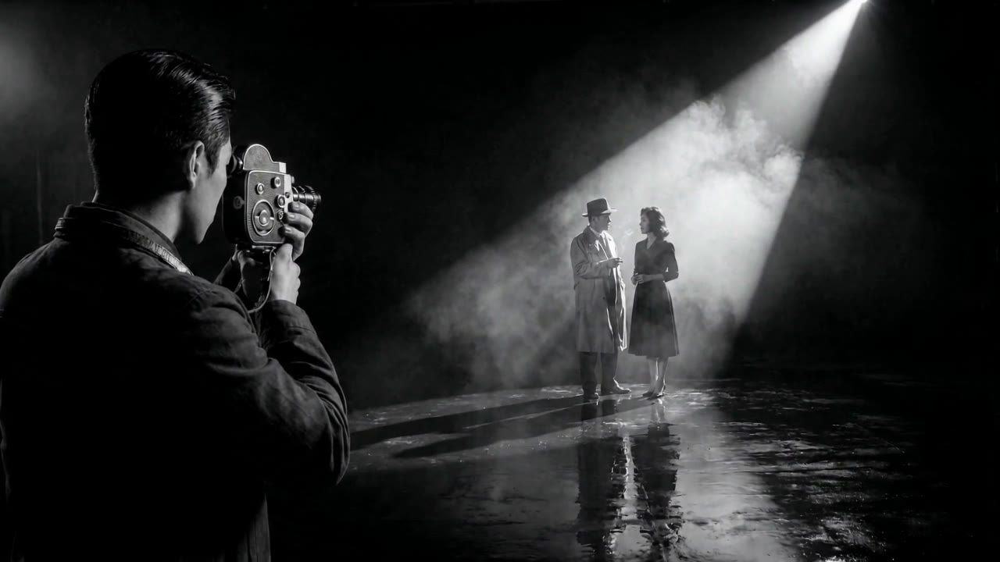
조수 시절, 흑백 느와르
동공을 통과하면 색이 빠져나간다. 스포트라이트 하나, 28세의 그는 빛 밖 어둠에 서 있다. "그는 빛을 만들지만 빛 안에 없다" — 커리어의 첫 문장이자 일생의 예언.
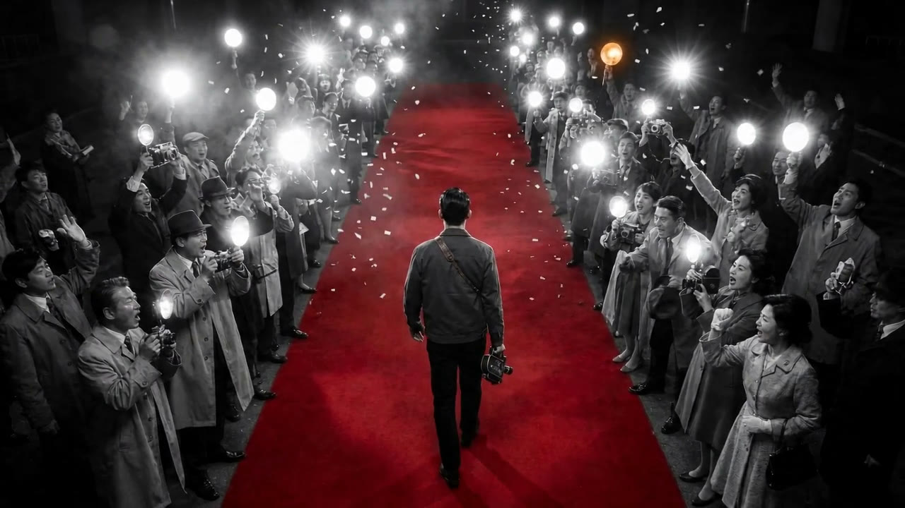
첫 성공, 정지된 플래시 세례
흑백 화면에 레드카펫의 붉은색이 영화 최초의 색으로 스며든다. 수백 대의 카메라가 그를 향하지만 — 플래시 세례는 관심이지, 시선이 아니다. 그의 세계에 색을 입힌 것은 삶이 아니라 일이었다.
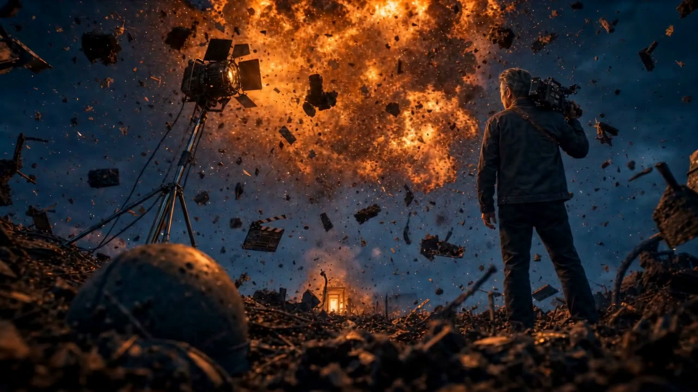
전쟁 영화, 멈춘 폭발
허공에 정지한 화구와 파편 사이를 카메라가 유영한다. 이 폭발은 그가 찍은 세트이자 그의 인생 자체의 초상이다 — 시련의 한복판은 그 안에 있을 때는 너무 빨라서, 오직 기억 속에서만 이렇게 멈춰 세워 바라볼 수 있다.
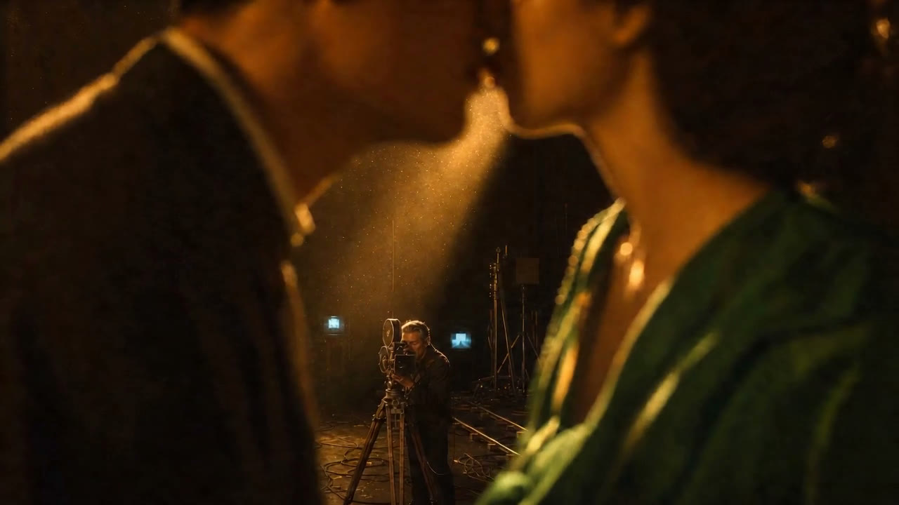
사랑, 황금빛 키스
그가 찍은 가장 아름다운 숏. 거대한 키스는 흐릿하게 뭉개지고, 뷰파인더 뒤의 그만 화면에서 유일하게 선명하다. 가장 아름다운 숏을 만들면서, 그 안에 없다. 사랑조차 그에게는 프레임 저편의 피사체였다.
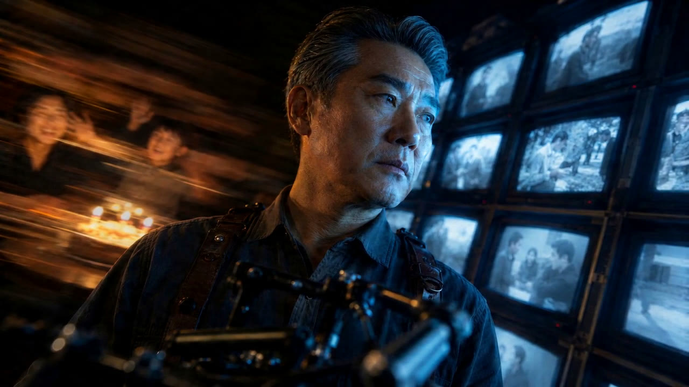
대가, 카메라에 묶인 남자
그는 못 박힌 듯 선명하고, 세계가 그의 걸음에 흔들린다. 그가 속한 쪽(모니터)은 차가운 블루, 그가 놓친 쪽(가족)은 따뜻한 골드 — 가족의 시간은 단 한 프레임도 선명하지 않다. 그가 실제로 그렇게 겪었기 때문이다.
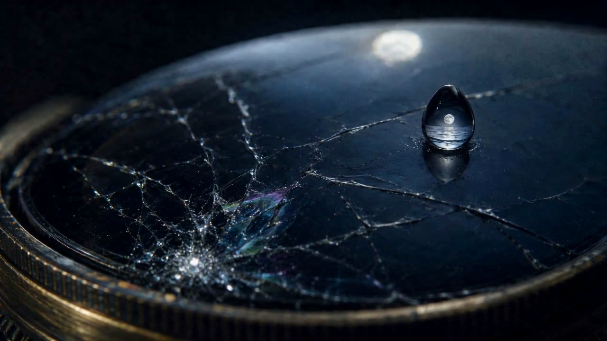
상실, 금 가는 렌즈
세트에서 받는 아내의 부고. 렌즈 유리에 방사형 균열이 개화하고, 그 위로 눈물 한 방울 — 그의 눈이 아니라 렌즈가 운다. 평생 세상과 자신 사이에 세워둔 유리벽이 갈라지는 순간이다.
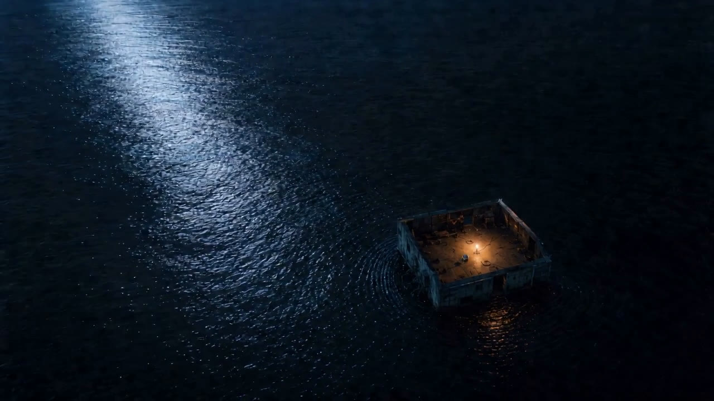
애도, 눈물이 바다가 될 때
눈물 한 방울에서 빠져나와 멀어지면, 텅 빈 스튜디오가 검은 밤바다 한가운데 섬처럼 떠 있다. 슬픔은 부피가 아니라 축척의 문제다 — 밖에서 보면 한 방울이지만, 그 안에 있는 사람에게는 수평선이 보이지 않는 바다다.
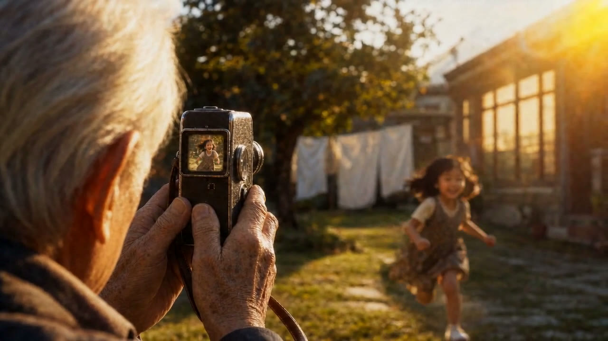
몰락, 빛이 죽는 것을 지켜보는 숏
마지막 작업등 하나가 두 번 깜빡이고 죽는다. 커리어의 끝은 폭발이 아니라 소등이다. 그리고 이 영화 유일의 완전한 어둠은 죽음이 아니라 눈꺼풀 — 어둠을 접점으로 3막이 깨어난다.
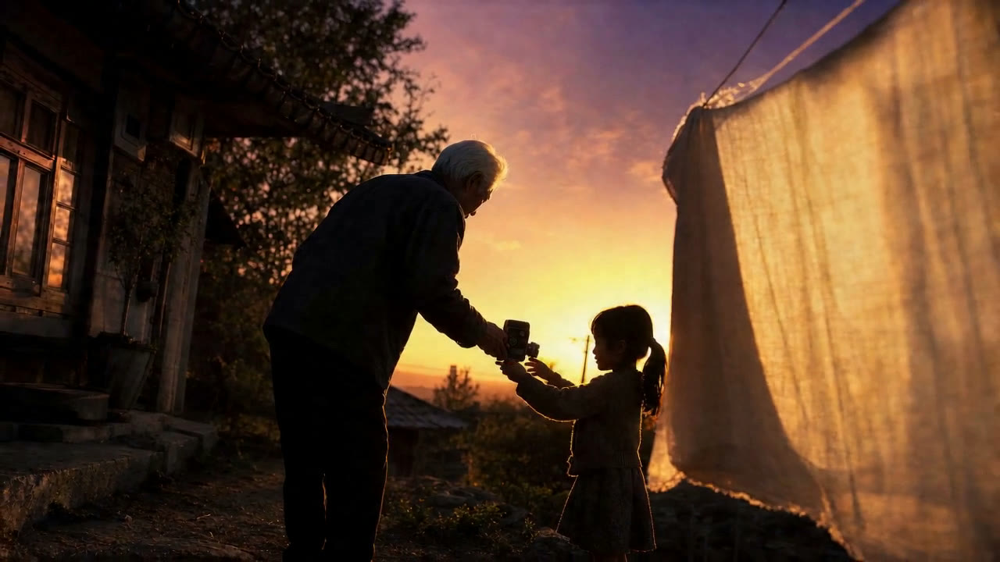
회귀, 8mm와 오후
75세의 그가 마당에서 낡은 8mm로 손녀를 찍는다. 일생 처음으로 카메라가 일이 아니라 사랑하는 사람을 향한다. 완벽한 화질은 일의 언어고, 흔들리는 화면은 사랑의 언어다. 못 찍어서 흔들린 게 아니라, 손이 사람이어서 흔들렸다.
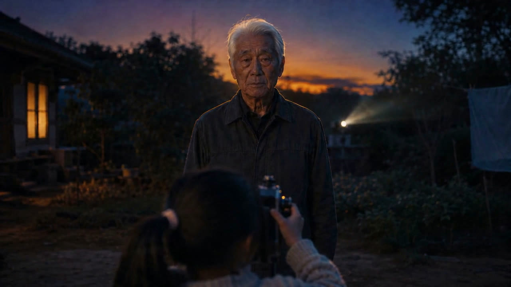
반전, 처음으로 프레임 안에
손녀가 8mm를 건네받아 들어 올리고, 그가 생애 처음으로 렌즈를 정면으로 응시한다. 평생 프레임 밖에 있던 남자가 처음으로 삶 안에 서는 순간 — 시선은 종종 뜻밖의 방향에서 돌아온다. 우리가 시선을 주었던 가장 작은 사람에게서. 이 순간을 위해 영화 전체가 60초 동안 아이레벨 정면을 금지해 왔다.
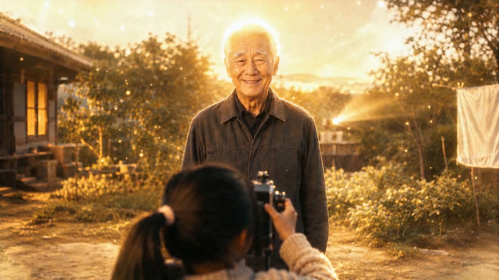
빛의 향연, 처음으로 미소
등 뒤에서 느린 일출처럼 금빛이 차오르고, 그의 얼굴에 — 75년 만에 처음 허락한 — 미소가 떠오른다. 당신을 바라봐주는 시선은 하나면 된다. 그리고 그 하나는, 늦게 와도 온 것이다.
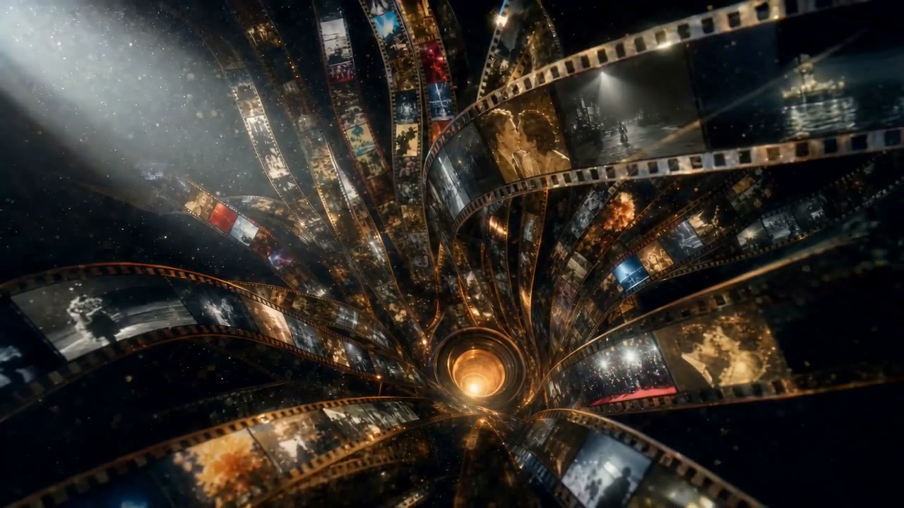
릴의 폭포, 그 어디에도 그는 없다
지금껏 보던 금빛 세계 전체가 손녀의 8mm 렌즈에 맺힌 상이었다. 렌즈에서 필름들이 쏟아져 그의 전 생애 — 느와르, 레드카펫, 폭발, 황금 키스 — 가 소용돌이친다. 그 어디에도 그 자신은 없다. 관찰자의 일생에 대한 가장 물리적인 요약.
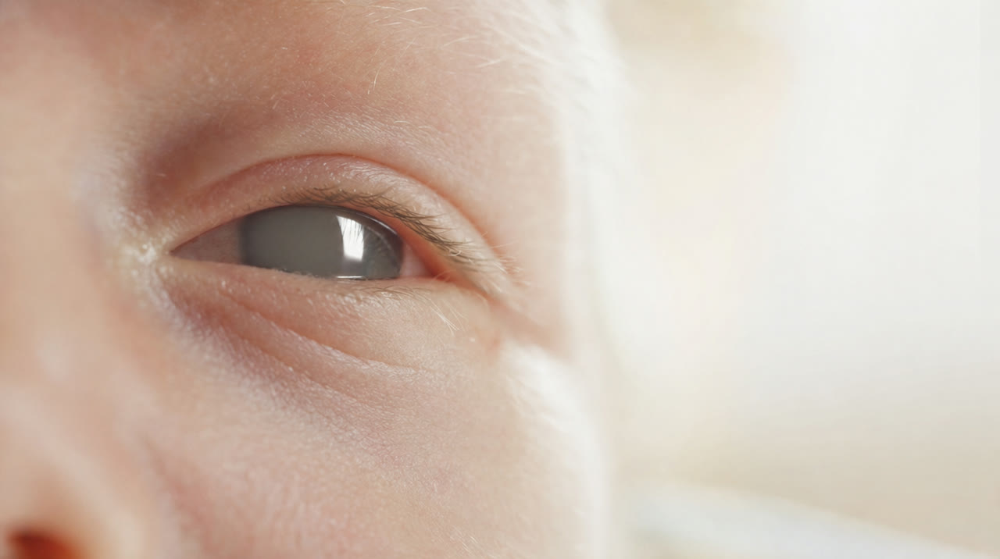
탄생, 아기의 눈
생애 첫 눈꺼풀이 열린다. 막 뜬 아기의 홍채 안에, 방금 우리가 통과해온 필름의 폭포가 돌고 있다. 시선은 상속된다 — 우리는 재산만 물려주는 것이 아니라, 바라보는 법을 물려준다. 그의 롱테이크는 여기서 끝나지만, 필름 자체는 끝나지 않는다.
SYMBOLS — 상징 사전
- 렌즈사랑의 도구이자 유리벽. 초점이 맞는다는 것은 거리가 있다는 뜻 — 잘 보였기 때문에, 멀리 있었다.
- 눈 ↔ 조리개영화는 닫혀가는 노인의 눈으로 들어가 막 뜨는 아기의 눈으로 나온다. 눈은 일생이 보관되고 상속되는 장소다.
- 멈춘 시간기억은 시간 밖에 저장된다. 나이가 든다는 것은 멈춘 순간이 늘어나는 일이다.
- 프레임 속 프레임문틀·모니터·뷰파인더 — 그가 평생 서 있던 자리의 지도. 그는 늘 프레임을 만드는 쪽이었고, 들어가는 쪽이 아니었다.
- 단일 광원모든 장면은 하나의 빛으로만 조명된다. 기억은 디테일이 아니라 "그때 그 빛"으로 남기 때문이다.
- 눈물 → 바다슬픔의 축척. 모든 슬픔은 그 사람의 축척으로 잰다. 바다는 마르지 않지만, 우리는 바다 위를 지나갈 수 있다.
- 8mm사랑은 화질이 낮아도 된다. 일생 최고의 장비로 세상을 찍던 남자의 마지막 카메라가 낡은 8mm라는 것.
- 홑이불 스크린필모그래피의 대극장들이 아니라 마당 빨랫줄의 이불 한 장 — 그의 인생에서 가장 작고 가장 따뜻한 상영관.
- 노을임종의 방에 들던 그 노을이, 그가 처음으로 보여지는 순간의 역광이다. 끝의 빛과 절정의 빛이 같다 — 그 순간이 그의 임종에서 가장 빛나는 기억이라는 뜻.
- 필름 릴 폭포인생을 인화하면 남는 것. 마지막에 아기의 눈 안으로 옮겨져 돌기 시작한다 — 모든 인생은 태어나는 순간 릴이 감기기 시작하는, 편집 없는 단 한 편의 롱테이크다.
DIRECTOR'S STATEMENT — 감독의 말
이 영화의 주인공은 촬영감독이지만, 카메라를 든 적 없는 사람도 이 남자를 안다. 아이의 재롱을 눈이 아니라 휴대폰 화면으로 본 저녁이 있었을 것이다. 여행지에서 노을보다 노을 사진을 먼저 챙긴 날이 있었을 것이다. 렌즈는 은유다. 일이기도 하고, 역할이기도 하고, "나중에"라는 말이기도 하다. 우리는 모두 조금씩, 자기 삶의 스태프로 산다. 출연은 미루면서.
이 영화는 그 사람 — 성실해서 뒤로 물러난 사람, 책임감 때문에 프레임 밖을 지킨 사람 — 을 심판하려고 만든 것이 아니다. 이것은 그 사람을 안아주는 영화다. 다 보고 나서 남았으면 하는 것은 죄책감이 아니라 두 개의 허락이다.
하나. 지켜본 시간도 사랑이었다. 뒤로 물러나 있던 세월, 프레임 밖에서 일만 하던 날들 — 그것은 사랑의 부재가 아니라 사랑의 한 형식이었다. 서툴렀을 뿐이다.
둘. 아직 상영 중이다. 인생이 편집할 수 없는 원테이크라는 말은, 지나간 장면을 고칠 수 없다는 뜻이면서 동시에 — 카메라가 아직 돌고 있다는 뜻이다. 주인공은 마지막 순간에야 프레임 안으로 들어왔고, 영화는 그것을 늦었다고 말하지 않는다. 롱테이크는 끝나야 끝난 것이다.
본다는 것은 사랑한다는 것이다.
그리고 당신도, 보여질 자격이 있다.
STILLS


CREDITS
- DIRECTED BYAHN JAEKWON
- GENERATIVE AI · COMPOSITINGAHN JAEKWON
- PIPELINENano Banana Pro · Seedance 2.0 · After Effects · Topaz · Premiere Pro
- MUSIC THEMEThe Legacy of Time